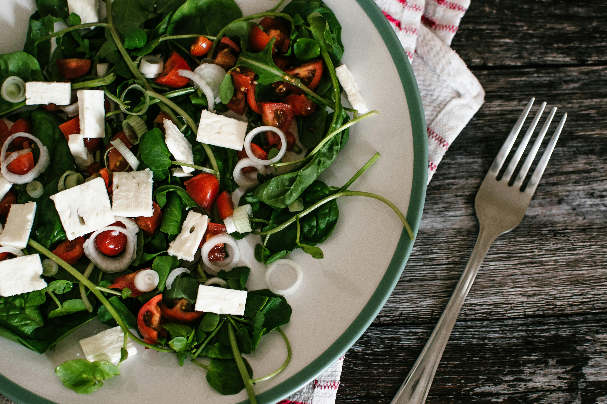
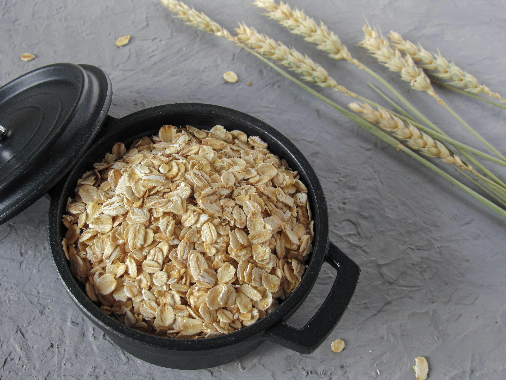

Garlic (Allium sativum)
Contains Allicin, which has potent medicinal properties including antimicrobial and anti-inflammatory effects.

Turmeric
Rich in Curcumin, a bioactive substance that fights inflammation at the molecular level.

Spinach
Loaded with iron, calcium, and antioxidants that support bone health and blood production.

Fatty Fish (Salmon)
A premier source of Omega-3 fatty acids, essential for brain function and heart health.

Blueberries
High in anthocyanins which protect the body from DNA damage and oxidative stress.

Broccoli
Contains sulforaphane, which may reduce the risk of various chronic diseases.

Ginger
Effective in speeding up stomach emptying, which can be beneficial for people with indigestion.

Walnuts
Provides healthy fats and polyphenols that help lower LDL cholesterol.

Whole Oats
Contains Beta-Glucan fiber which helps reduce blood sugar and insulin response.
Greek Yogurt
A probiotic powerhouse that maintains a healthy balance of bacteria in the digestive system.
Avocado
Rich in monounsaturated oleic acid, which reduces inflammation and supports skin health.

Green Tea
Loaded with catechins that improve blood flow and lower cholesterol.

Almonds
High in Vitamin E, which protects cells from oxidative damage.

Sweet Potatoes
Excellent source of beta-carotene, converted to Vitamin A in the body.
Flaxseeds
Contains lignans and fiber that help improve hormonal balance.